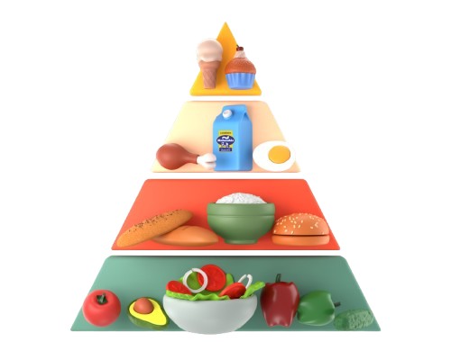

Uma pirâmide alimentar é uma representação gráfica que ilustra a hierarquia dos diferentes grupos de alimentos e a quantidade recomendada de cada grupo. Ela serve como um modelo de orientação a respeito de como compor uma dieta balanceada, nutritiva e saudável.
- Açúcares e doces: 110 kcal (1 porção por dia)
- Carnes e ovos: 190 kcal (1 porção por dia)
- Feijões e oleaginosas: 55 kcal (1 porção por dia)
- Frutas: 210 kcal (3 porções por dia)

- Óleos e gorduras: 73 kcal (1 porção por dia)
- Leite, queijo e iogurte: 360 kcal (3 porções por dia)
- Legumes e verduras: 45 kcal (3 porções por dia)
- Arroz, pão, massa, batata, mandioca: 900 kcal (6 porções por dia)